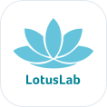

Hi, ashkid
Today 17/09/2026
Completed Activities
Join additional program? Click here
LotusLab · LotusPROMIS-10 clickable prototype. Surveys unlock in groups. Each survey ends on a milestone.

Join additional program? Click here
This prototype keeps your progress in this browser so you can walk the grouped unlock and milestone flow.